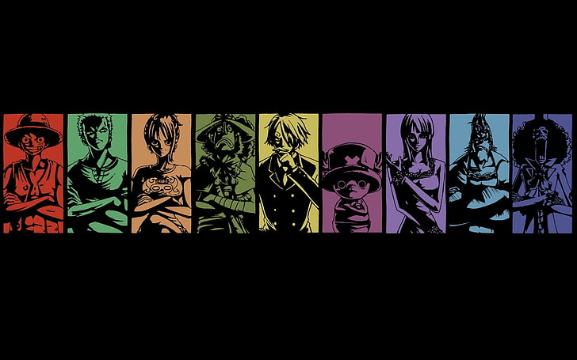
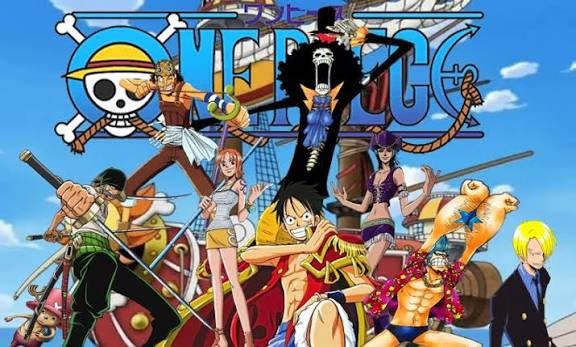
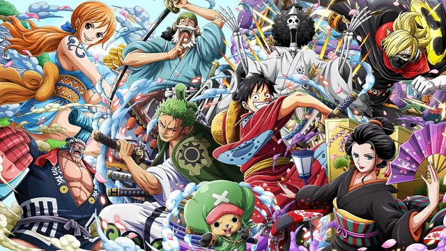
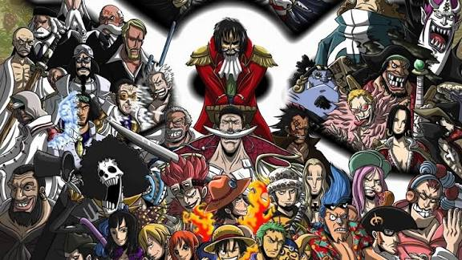
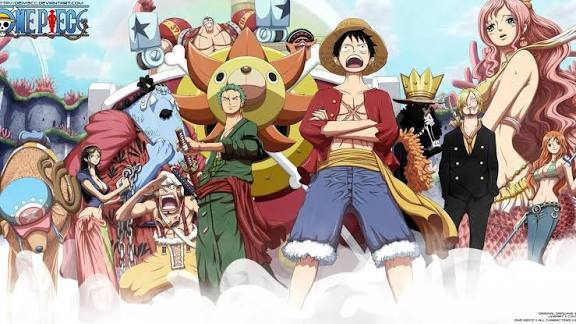

Pagína de Animes

One Piece
O mundo de One Piece é povoado por humanos e muitas outras raças, como anões, homens-peixe e gigantes. É coberto por dois vastos oceanos, que são divididos por uma enorme cordilheira chamada Red Line; A Grand Line, um mar que corre perpendicularmente à Red Line, divide-os em quatro mares: North Blue, East Blue, West Blue e South Blue. Ao redor da Grand Line, estão duas regiões chamadas Calm Belts, semelhantes às latitudes dos cavalos, que quase não experimentam ventos ou correntes oceânicas e são o terreno fértil para enormes criaturas marinhas chamadas reis-dos-mares. Por isso, os Calm Belts são barreiras muito eficazes para quem tenta entrar na Grand Line. No entanto, navios da Marinha, membros de uma organização intergovernamental conhecida como Governo Mundial, são capazes de usar uma pedra de prisma-do-mar (em japonês: 海楼石, transl. Kairōseki) para mascarar sua presença dos reis-dos-mares e podem simplesmente passar pelos Calm Belts. Todos os outros navios são forçados a seguir uma rota mais perigosa, passando por uma montanha na primeira interseção da Grand Line e da Red Line, um sistema de canais conhecido como Reverse Mountain. A água do mar de cada um dos quatro mares sobe aquela montanha e se funde no topo para fluir por um quinto canal e entrar na primeira metade da Grand Line, chamada Paraíso por causa da comparação com a segunda metade.
Galeria de fotos



